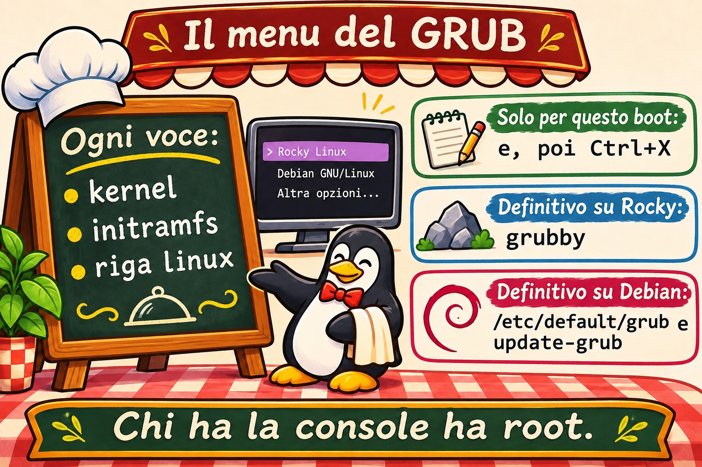
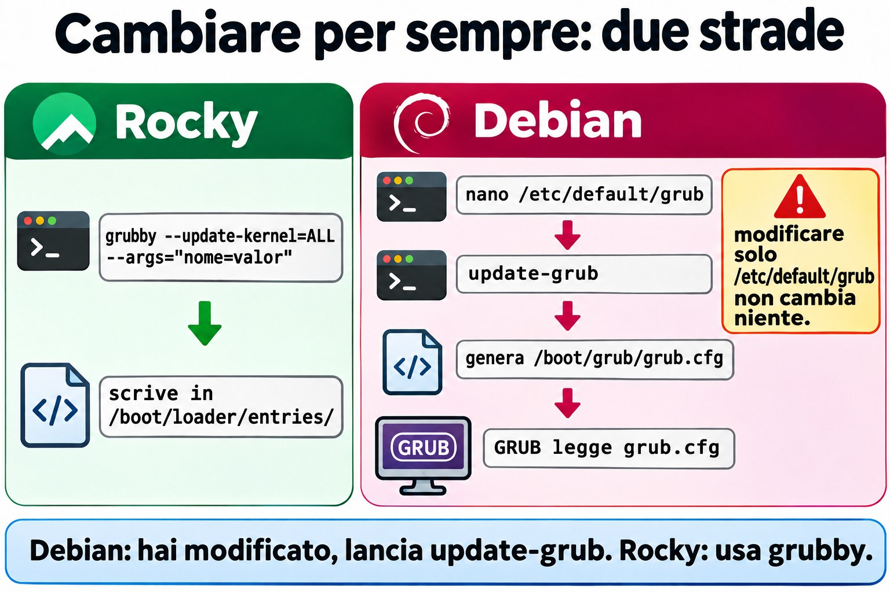
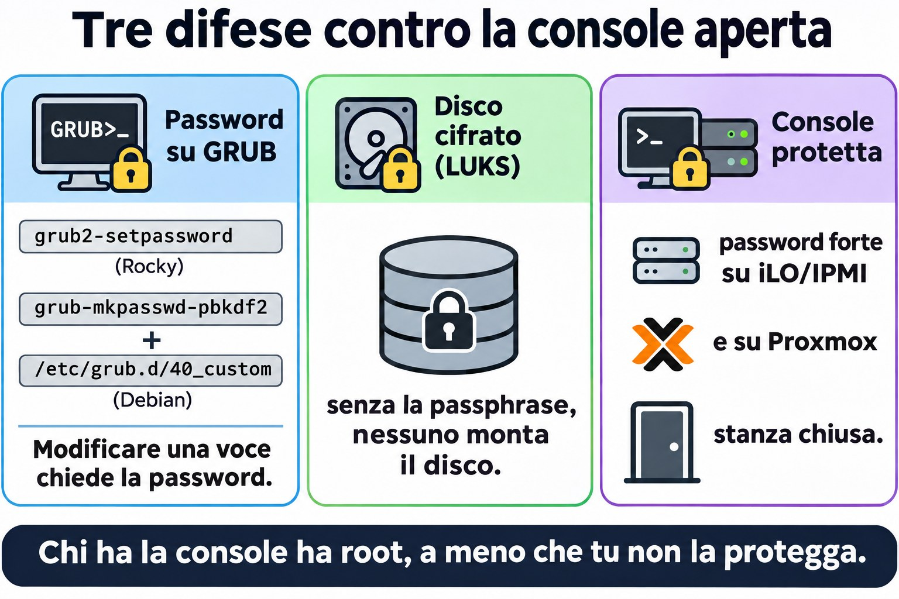
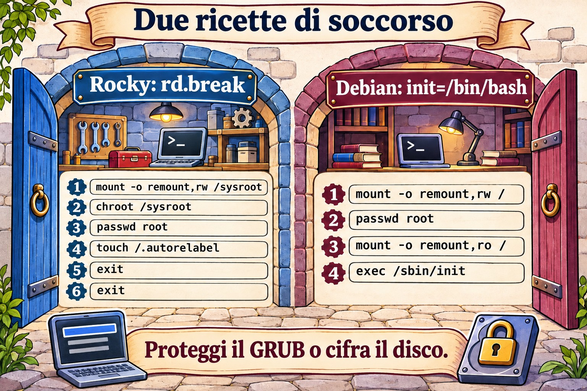

Lezione 4.4 · GRUB e accesso di emergenza
È l'ultima lezione del modulo 4. Sai già che GRUB è il secondo frazionista della staffetta (4.1) e che si può avviare la macchina in un target diverso (4.3). Oggi metti mano a GRUB sul serio: cambi i parametri del kernel solo per un boot o per sempre, e recuperi la password di root di una macchina in cui nessuno riesce a entrare.
Il cuore di questa lezione: nel menu di GRUB,
emodifica la voce eCtrl+Xavvia con la modifica, che vale solo per quel boot. Per cambiare in modo permanente: su Rocky,grubby; su Debian,/etc/default/grubseguito daupdate-grub. Per recuperare la password di root: su Rocky,rd.break, poi remount, chroot, passwd etouch /.autorelabel; su Debian,init=/bin/bash, poi remount e passwd. E la lezione di sicurezza: chi ha la console ha root, a meno che tu non protegga GRUB o cifri il disco.
| Scheda | |
|---|---|
| Modulo | M4 · Boot e systemd, lezione 4 di 4, che chiude il modulo |
| Quando | Settimana 9 |
| Durata | circa 1h30, più la sfida del modulo |
| Prerequisiti | Lezioni da 4.1 a 4.3 |
| Lab | rocky-lab (201) e debian-lab (202), con la console di Proxmox aperta |
| Prima di iniziare | backup su PBS delle due VM, oltre allo snapshot |
| Snapshot | m4a4-inicio e m4a4-fim |
1 Riscaldamento
Rispondi prima di leggere. Le risposte sono nelle Soluzioni, alla fine della lezione.
- Quale programma carica in memoria il kernel e l'initramfs?
- Un parametro che digiti nella schermata di GRUB vale per quanti boot?
- Chi ha accesso alla console di un server Linux senza alcuna protezione riesce a diventare root senza conoscere la password?
2 Perché conta
| Situazione reale | Cosa risolve |
|---|---|
| Hai preso in carico un server e nessuno conosce la password di root | Recupero da GRUB |
| Un kernel nuovo non parte dopo l'aggiornamento | Scegliere il kernel precedente nel menu, e poi renderlo quello predefinito |
| Il fornitore chiede di disattivare un'opzione del kernel a ogni boot | grubby --args oppure /etc/default/grub |
| L'audit chiede se chiunque abbia accesso alla sala diventa root | Password su GRUB e disco cifrato |
3 Modello mentale
GRUB è un menu del ristorante. Ogni voce del menu è una ricetta: quale kernel, quale initramfs e quali parametri passare al kernel (la riga che inizia con linux). Il kernel legge quei parametri e li passa a systemd. È così che ha funzionato il systemd.unit=rescue.target della 4.3.
Puoi modificare la ricetta in due modi:
| Modo | Dove | Dura |
|---|---|---|
| Al volo | Tasto e nel menu, poi Ctrl+X | Solo questo boot |
| Per sempre | File sul disco, e poi rigenerare la configurazione | Tutti i boot |
E perché si può recuperare la password di root? Perché, se dici al kernel di fermarsi prima che il sistema normale si avvii, non c'è ancora nessuno che chieda una password: finisci in una shell che è già root. Su Rocky, rd.break si ferma alla fine dell'initramfs, prima di passare il controllo al disco vero. Su Debian, init=/bin/bash sostituisce systemd con un bash come primo processo.


4 L'essenziale
Il menu di GRUB
Subito dopo il BIOS/UEFI, il menu compare per qualche secondo. Se non compare, premi Esc o tieni premuto Shift appena inizia il boot. Nel menu:
| Tasto | Fa |
|---|---|
| Frecce | Scelgono la voce (un altro kernel, per esempio) |
e | Modifica la voce selezionata |
Ctrl+X (o F10) | Avvia con la modifica |
Esc | Scarta la modifica e torna al menu |
c | Apre la riga di comando di GRUB |
Nella modifica, cerca la riga che inizia con linux e aggiungi il parametro in fondo. Di solito è lunga e va a capo su più righe sullo schermo, ma è una riga sola. Usa End o Ctrl+E per andare in fondo.
Tastiera: GRUB e le shell di emergenza di solito usano il layout americano. Se il carattere esce sbagliato su una tastiera italiana, il = sta sul tasto ì (il secondo a destra dello 0), il - sul tasto ', e la / sul tasto -. Per lo stesso motivo, usa una password temporanea fatta solo di lettere e numeri, e cambiala dopo, a sistema normale.
Cambiare per sempre su Rocky: grubby
Rocky tiene una voce per ogni kernel in /boot/loader/entries/ (il formato BLS), e grubby è lo strumento per metterci mano:
sudo grubby --default-kernel
sudo grubby --info=DEFAULT
sudo grubby --info=ALL | grep -E '^(kernel|args)'
sudo grubby --update-kernel=ALL --args="nome=valor"
sudo grubby --update-kernel=ALL --remove-args="rhgb quiet"
sudo grubby --set-default /boot/vmlinuz-VERSÃOPotresti anche modificare /etc/default/grub ed eseguire grub2-mkconfig -o /boot/grub2/grub.cfg, ma nelle versioni attuali di Rocky 9 questo non aggiorna i parametri dei kernel già installati (per questo esiste l'opzione --update-bls-cmdline). Per questo, su Rocky, usa grubby.
Cambiare per sempre su Debian: /etc/default/grub
sudo nano /etc/default/grub # GRUB_TIMEOUT, GRUB_CMDLINE_LINUX_DEFAULT, GRUB_CMDLINE_LINUX
sudo update-grub # rigenera /boot/grub/grub.cfgupdate-grub è solo una scorciatoia per grub-mkconfig -o /boot/grub/grub.cfg. Non modificare mai grub.cfg a mano: è generato, e il prossimo aggiornamento del kernel sovrascrive la tua modifica. La differenza tra le due variabili: GRUB_CMDLINE_LINUX vale per tutte le voci, compresa quella di recupero, e GRUB_CMDLINE_LINUX_DEFAULT vale solo per le voci normali.


Recuperare la password di root su Rocky
- Nel menu, premi
ee aggiungird.breakin fondo alla rigalinux. PoiCtrl+X. - Finisci in una shell
switch_root:/#. Il disco vero è montato in/sysroot, in sola lettura. - Esegui:
mount -o remount,rw /sysroot
chroot /sysroot
passwd root
touch /.autorelabel
exit
exitIl primo exit esce dal chroot e il secondo continua il boot. Dato che il file /.autorelabel esiste, la macchina rietichetta tutto il disco per SELinux (ci vogliono alcuni minuti) e si riavvia da sola una volta.
touch /.autorelabel serve perché passwd riscrive /etc/shadow. Dato che è stato eseguito fuori dal sistema normale, senza SELinux caricato, il file nuovo nasce senza l'etichetta giusta. Con SELinux in modalità enforcing, nessun login con password riesce a leggere lo shadow: né quello di root, né quello del tuo utente. La rietichettatura risolve il problema. SELinux ha un modulo tutto suo, più avanti; per ora, memorizza la riga.
Recuperare la password di root su Debian
- Nel menu, premi
ee aggiungiinit=/bin/bashin fondo alla rigalinux. PoiCtrl+X. - Finisci in un
root@(none):/#. La root è montata in sola lettura. - Esegui:
mount -o remount,rw /
passwd root
sync
mount -o remount,ro /
exec /sbin/initexec /sbin/init sostituisce bash con systemd e continua il boot normale. Qui systemctl reboot non funziona, perché systemd non è in esecuzione. Debian non usa SELinux di default, quindi non serve la rietichettatura.
Proteggersi da tutto questo
Hai appena visto che la console ti dà root. Le difese sono tre:
- Password su GRUB:
grub2-setpasswordsu Rocky. Su Debian,grub-mkpasswd-pbkdf2più una voce in/etc/grub.d/40_custom. Così, modificare una voce richiede la password. - Disco cifrato (LUKS): senza la passphrase, nessuno monta il disco, né da GRUB né togliendo il disco dalla macchina.
- Proteggere la console: password robusta su iLO/IPMI e su Proxmox, e la sala chiusa a chiave.
Nel lab, non mettere la password su GRUB: ti servirà aperto nella sfida.


Rocky × Debian
| Rocky 9 | Debian 12 | |
|---|---|---|
| Configurazione che modifichi | /etc/default/grub e le voci in /boot/loader/entries/ | /etc/default/grub |
| File generato | /boot/grub2/grub.cfg | /boot/grub/grub.cfg |
| Strumento di tutti i giorni | grubby | update-grub |
| Recuperare root | rd.break + remount /sysroot + chroot + passwd + touch /.autorelabel | init=/bin/bash + remount / + passwd + exec /sbin/init |
| Password su GRUB | grub2-setpassword | grub-mkpasswd-pbkdf2 + 40_custom |
5 Lab guidato
Passo 0 · Backup, snapshot e console
Oggi metti mano a ciò che fa accendere la macchina. Per questo, oltre allo snapshot, fai un backup su PBS. Nella shell del nodo Proxmox:
pvesm status # ache o nome do storage do PBS
vzdump 201 --storage NOME_DO_PBS --mode snapshot
vzdump 202 --storage NOME_DO_PBS --mode snapshot
qm snapshot 201 m4a4-inicio
qm snapshot 202 m4a4-inicioSe preferisci, fai il backup dall'interfaccia: VM, poi Backup, poi Backup now, scegliendo lo storage PBS. Poi apri la console (noVNC) delle due VM e lasciala aperta. In ogni VM:
mkdir -p ~/lab44 && cd ~/lab44Passo 1 · Conoscere il GRUB di ciascuna
Sulla rocky-lab:
cat /proc/cmdline
sudo grubby --default-kernel
sudo grubby --info=DEFAULT
ls /boot/loader/entries/
grep -v '^#' /etc/default/grubSulla debian-lab:
cat /proc/cmdline
grep -v '^#' /etc/default/grub | grep .
ls -l /boot/grub/grub.cfgAnnota in ~/lab44/notas.txt: quanti kernel ha ciascuna, qual è quello predefinito, e il timeout del menu.
Passo 2 · Modificare solo per un boot
Riavvia la rocky-lab e guarda la console. Nel menu, premi e, vai in fondo alla riga linux, aggiungi systemd.unit=rescue.target e premi Ctrl+X.
La macchina parte in rescue, come nella 4.3, ma questa volta senza che tu abbia cambiato nulla sul disco. Entra con la password di root e controlla:
cat /proc/cmdline
systemctl get-defaultIl predefinito resta multi-user.target: il parametro del boot ha vinto. Riavvia con systemctl reboot, senza toccare nulla nel menu. La macchina torna normale, e cat /proc/cmdline non mostra più il parametro: la modifica è valsa per un solo boot.
Passo 3 · Cambiare per sempre
Rocky: togli rhgb quiet per vedere i messaggi del boot. È quello che vorrai su un server che non parte.
sudo grubby --update-kernel=ALL --remove-args="rhgb quiet"
sudo grubby --info=ALL | grep -E '^(kernel|args)'
sudo systemctl rebootNella console, ora vedi scorrere i messaggi del kernel e di systemd.
Debian: aumenta il tempo del menu. In /etc/default/grub, cambia GRUB_TIMEOUT=5 in GRUB_TIMEOUT=10 e salva. Non eseguire ancora update-grub.
Decidi 1
Hai salvato /etc/default/grub con GRUB_TIMEOUT=10 e stai per riavviare la debian-lab senza eseguire update-grub. Quanto aspetta il menu?
- A) 10 secondi, perché il file è stato salvato.
- B) 5 secondi, perché nulla è cambiato in ciò che GRUB legge.
- C) Il menu non compare nemmeno, perché la configurazione è diventata incoerente.
Scegli un'opzione prima di continuare. Poi riavvia e cronometra nella console.
| Se hai scelto | Risultato | Perché |
|---|---|---|
| A | Sbagliato | GRUB non legge /etc/default/grub. Legge /boot/grub/grub.cfg, che è ancora quello vecchio |
| B | Giusto | /etc/default/grub è solo la ricetta per generare grub.cfg, e a generarlo è update-grub |
| C | Sbagliato | Non c'è nessuna incoerenza: il vecchio grub.cfg resta valido |
Ora applica e controlla:
sudo update-grub
grep -m1 'timeout=' /boot/grub/grub.cfg
sudo systemctl rebootDa ricordare: su Debian, se hai modificato /etc/default/grub, esegui update-grub. Su Rocky, preferisci grubby, che scrive direttamente nelle voci.
Passo 4 · Recuperare la password di root su Rocky
Fingi che nessuno conosca la password di root della rocky-lab. Dalla console, riavvia. Nel menu, premi e e aggiungi rd.break in fondo alla riga linux. Poi Ctrl+X. Finisci nel switch_root:/#.
Decidi 2
Prima di qualsiasi altra cosa, esegui chroot /sysroot e subito dopo passwd root. Cosa succede?
- A) La password cambia normalmente.
- B)
passwdfallisce con un errore del tipo Authentication token manipulation error. - C) La macchina si blocca con un kernel panic.
Scegli un'opzione prima di continuare. Poi eseguilo e guarda cosa succede.
| Se hai scelto | Risultato | Perché |
|---|---|---|
| A | Sbagliato | /sysroot è montato in sola lettura, e passwd deve scrivere /etc/shadow |
| B | Giusto | Senza il remount in lettura e scrittura, nessuna scrittura su disco funziona |
| C | Sbagliato | Un errore di scrittura è solo un errore: il kernel resta in piedi |
Esci dal chroot con exit e fai la sequenza giusta:
mount -o remount,rw /sysroot
chroot /sysroot
passwd root
touch /.autorelabel
exit
exitAspetta la rietichettatura e il riavvio automatico. Poi, nella console, entra come root con la nuova password e controlla:
getenforce # Enforcing
ls -Z /etc/shadow # deve aparecer shadow_tInfine, sostituisci la password temporanea con una definitiva usando passwd root. Ora la tastiera è già nel layout giusto.
Da ricordare: l'ordine è remount, chroot, passwd, autorelabel, exit ed exit. Se salti il remount, passwd fallisce. Se salti l'autorelabel, dopo il boot il login non funziona.
6 Rompi e ripara
Sulla rocky-lab, via SSH:


sudo grubby --update-kernel=ALL --args="systemd.unit=emergency.target"
sudo systemctl rebootLa macchina parte in emergency a ogni boot. Indaga dalla console: cosa mostra systemctl get-default? Dov'è la causa? /boot è montato? La root accetta scritture?
Hai due strade per riparare. Sceglierne una e poi prova l'altra:
- Da GRUB: nel menu,
e, cancellasystemd.unit=emergency.targetdalla rigalinuxeCtrl+X. La macchina parte normale, solo questa volta. Poi, via SSH, eseguisudo grubby --update-kernel=ALL --remove-args="systemd.unit=emergency.target". - Da dentro l'emergency: la root è in sola lettura e
/bootnon è montato, quindigrubbynon ha dove scrivere. Esegui:
mount -o remount,rw /
mount /boot
grubby --update-kernel=ALL --remove-args="systemd.unit=emergency.target"
systemctl rebootLa lezione: quando get-default dice una cosa e la macchina ne fa un'altra, guarda /proc/cmdline. Un parametro di boot vince sul target predefinito.
7 Trappole
- Dimenticare
touch /.autorelabelsu Rocky. Dopo il riavvio, nessun login con password funziona. Riparazione:rd.breakdi nuovo, e questa volta con l'autorelabel. - Dimenticare il remount. Sia
/sysrootsu Rocky sia/su Debian partono in sola lettura. - Modificare
grub.cfga mano. Il prossimo aggiornamento del kernel cancella la tua modifica. - Modificare
/etc/default/grube non eseguireupdate-grub. Non cambia nulla. - Su Rocky, cambiare solo
/etc/default/grub. I kernel già installati non ricevono la modifica. Usagrubby. - Tastiera americana in GRUB e nelle shell di emergenza. La password che hai digitato lì potrebbe non essere quella che pensi. Usa una password temporanea semplice e cambiala dopo.
systemctl rebootconinit=/bin/bash. Non funziona, perché systemd non è in esecuzione. Usaexec /sbin/init.- Toccare GRUB e non riavviare per provare. Prova finché hai la console e il tempo, non il giorno del guasto.
8 Quiz
- Su Debian, dove si cambia il tempo del menu di GRUB, e quale comando applica la modifica?
- Su Rocky, come si aggiunge un parametro del kernel a tutti i kernel installati?
- Perché Rocky ha bisogno di
touch /.autorelabele Debian no? - Dopo
rd.break, perché bisogna rimontare/sysroot? - Nel menu di GRUB, quale tasto modifica la voce, e quale avvia con la modifica?
- Name two measures that stop someone with console access from resetting the root password through GRUB.
9 Promemoria
Da sapere a memoria
| Comando o tasto | Fa |
|---|---|
e / Ctrl+X | Modifica la voce / avvia con la modifica |
cat /proc/cmdline | Mostra con quali parametri è partito il kernel |
grubby --info=DEFAULT | Mostra il kernel predefinito e i parametri (Rocky) |
grubby --update-kernel=ALL --args= / --remove-args= | Aggiunge o toglie parametri (Rocky) |
/etc/default/grub + update-grub | Cambia per sempre (Debian) |
rd.break → remount /sysroot → chroot → passwd → touch /.autorelabel | Recupera root (Rocky) |
init=/bin/bash → remount / → passwd → exec /sbin/init | Recupera root (Debian) |
Da consultare
grubby --set-default, grub2-mkconfig -o /boot/grub2/grub.cfg, --update-bls-cmdline, GRUB_CMDLINE_LINUX e GRUB_CMDLINE_LINUX_DEFAULT, /boot/loader/entries/, grub2-setpassword, grub-mkpasswd-pbkdf2, /etc/grub.d/40_custom, grub-install, ls -Z, getenforce.
Flashcard
| Domanda | Risposta |
|---|---|
GRUB legge /etc/default/grub? | No: legge il grub.cfg generato a partire da quel file |
Dov'è il disco vero dopo rd.break? | In /sysroot, in sola lettura |
Cosa ripara .autorelabel? | L'etichetta SELinux di /etc/shadow e del resto del disco |
Chi vince: il target predefinito o il systemd.unit= del boot? | Il parametro del boot |
| Qual è la difesa contro il reset della password dalla console? | Password su GRUB e disco cifrato |
10 Checklist e chiusura
- [ ] Ho modificato una voce nel menu solo per un boot
- [ ] Ho cambiato i parametri in modo permanente con
grubbysu Rocky - [ ] Ho cambiato il timeout su Debian e ho capito perché
update-grubè obbligatorio - [ ] Ho recuperato la password di root di Rocky, e SELinux è ancora Enforcing
- [ ] Ho riparato una macchina bloccata in emergency in entrambi i modi
- [ ] So le tre difese contro il reset della password dalla console
Ultimo esercizio, senza guardare la lezione: sulla debian-lab, riporta GRUB_TIMEOUT a 5, applica e verifica nel grub.cfg. Sulla rocky-lab, decidi se rivuoi rhgb quiet. Molti amministratori preferiscono il server senza. Se lo rivuoi, usa grubby.
Riavvio e verifica: riavvia le due VM e controlla:
cat /proc/cmdline
systemctl is-system-running # running
ls ~/lab44Snapshot di fine, nel nodo Proxmox:
qm snapshot 201 m4a4-fim
qm snapshot 202 m4a4-fim11 Nella vita reale
Missione, sola lettura. Su un server reale che amministri, esegui soltanto questi comandi, che non cambiano nulla.
Su Rocky o RHEL:
cat /proc/cmdline
sudo grubby --info=DEFAULT
sudo test -f /boot/grub2/user.cfg && echo "GRUB com senha" || echo "GRUB sem senha"
lsblk -f | grep -i cryptoSu Debian:
cat /proc/cmdline
grep -v '^#' /etc/default/grub | grep .
sudo grep -c password_pbkdf2 /boot/grub/grub.cfg
lsblk -f | grep -i cryptoRispondi: GRUB ha una password? Il disco è cifrato? Chi ha accesso alla console di questo server (iLO, Proxmox, la sala)? Se la risposta è "chiunque abbia la password di Proxmox diventa root qui", annotalo come rischio da discutere con il responsabile. Non cambiare nulla da solo.
Diario: scrivi tre righe su ciò che hai imparato oggi e un dubbio che ti è rimasto.
Domani, senza guardare:
- Scrivi la sequenza completa di recupero di root su Rocky.
- Di' quale file GRUB legge davvero, su Rocky e su Debian.
- Spiega in una frase perché
rd.breakdà una shell di root senza chiedere la password.
12 Approfondire quando vuoi
- La riga di comando di GRUB (
c):ls,set root=,linux,initrdeboot, per avviare a mano una macchina con il menu rotto. - Reinstallare GRUB da una ISO, con
grub-installegrub2-mkconfigdentro un chroot. - UEFI e Secure Boot: lo
shim,mokutil --sb-statee l'efibootmgrdella 4.1. - Tornare automaticamente al kernel precedente:
GRUB_DEFAULT=saved,grub2-set-defaultegrub2-editenv list. - Proteggere GRUB con una password su una VM di test, per vedere come diventa il menu.
In DeepTutor: !explica rd.break e init=/bin/bash, !feynman por que o autorelabel existe, !quiz GRUB e recuperação de root.
Sfida dell'M4
Il modulo 4 si chiude con il compito che salva più server nella vita reale: recuperare la password di root delle due VM, senza guardare la lezione.
Prima: sul nodo Proxmox, esegui qm snapshot 201 m4-desafio e qm snapshot 202 m4-desafio.
Regole:
- Usa solo la console di Proxmox, niente SSH.
- Non consultare la lezione, il Promemoria né DeepTutor. Se ti blocchi, ci sono dei suggerimenti nelle Soluzioni.
- Tempo obiettivo: 15 minuti per VM, senza contare la rietichettatura.
Hai finito quando:
| VM | Criterio |
|---|---|
| rocky-lab | Root entra nella console con la nuova password |
| rocky-lab | getenforce mostra Enforcing, e ls -Z /etc/shadow mostra shadow_t |
| rocky-lab | Anche il tuo utente normale entra con la password |
| debian-lab | Root entra nella console con la nuova password |
| debian-lab | systemctl is-system-running mostra running |
Bonus: scrivi in cinque righe, nel tuo Diario, perché funziona e come impedire che un estraneo faccia lo stesso.
Se va male: qm rollback 201 m4-desafio (o 202) riporta la VM allo stato di prima, e riprovi. Sbagliare qui costa poco: sbagliare sul server di un cliente, no.
Con questo, il Modulo 4 è concluso: sai come Linux si avvia, comanda i servizi, cambia modalità ed entra in una macchina chiusa a chiave.
Soluzioni commentate
Riscaldamento
- GRUB, il secondo frazionista della staffetta della 4.1.
- Un solo boot. Al boot successivo vale di nuovo ciò che c'è sul disco.
- Sì. Da GRUB, con
rd.breakoinit=/bin/bash. Non ci riesce solo se GRUB ha una password o il disco è cifrato.
Quiz
- Nella variabile
GRUB_TIMEOUTdi/etc/default/grub, e si applica consudo update-grub. sudo grubby --update-kernel=ALL --args="nome=valor".- Rocky usa SELinux in modalità enforcing.
passwdè stato eseguito senza la policy caricata, quindi il nuovo/etc/shadowè rimasto senza l'etichetta giusta, e SELinux ne blocca la lettura al login. Debian non usa SELinux di default, e il suo AppArmor non dipende dalle etichette sui file. - Perché l'initramfs monta il disco vero in
/sysrootin sola lettura, epasswddeve scrivere/etc/shadow. emodifica, eCtrl+X(oF10) avvia con la modifica.- A GRUB password, so boot entries cannot be edited, and full-disk encryption with LUKS, so the disk cannot be read without the passphrase. Physically securing the console (iLO/IPMI, hypervisor access, the server room) is the third layer.
Suggerimenti per la Sfida
Leggine una alla volta.
passwdè fallito: hai dimenticato il remount in lettura e scrittura.- Su Rocky, dopo il riavvio non entra nessuno: mancava
touch /.autorelabel. Ripeti tutto il procedimento. - Su Debian,
systemctl rebootnon funziona: systemd non è in esecuzione. Usaexec /sbin/init. - La nuova password dopo non funziona: è stata la tastiera americana. Ripeti con una password fatta solo di lettere e numeri.